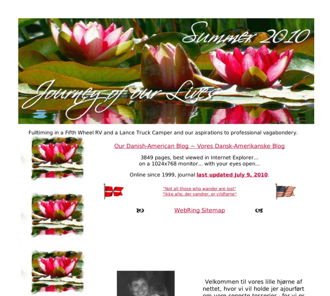

Previewing: The Journey of our Lives Previewing: The Journey of our Lives 
Use the left/right red arrow controls to navigate through this ring - Click the preview image to visit the member site.

Our Danish-American homepage and journal of our everyday activities, our travels, living fulltime in a Fifth Wheel RV in the mountains of Southern California, about our aspirations to professional vagabondery, and about what I think of it all.
The Journey of our Lives owned by:
 lisagersjenki lisagersjenki
A member of the original webring since 05/06/2006.
|
|